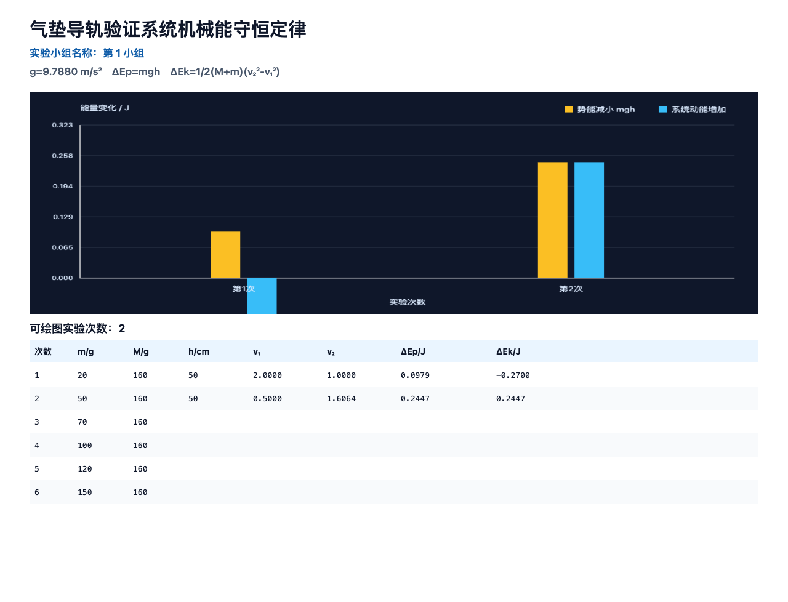
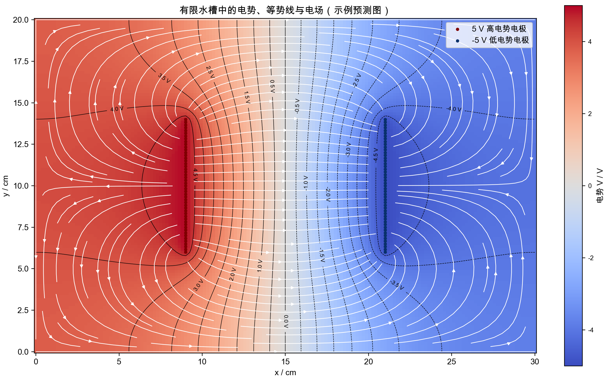
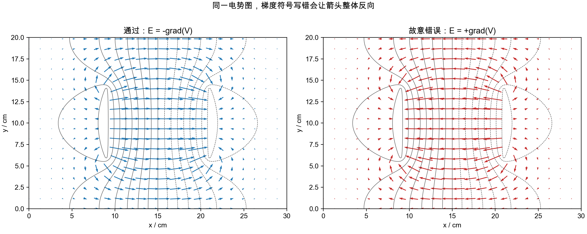

AI Coding 深度参与
输入的v₁为什么自己变了
从一个逐字输入故障追到教师的原始错误规则，再把规则从代码中退回。
带走：需求映射、变更地图、故障复现、异常数据、独立手算和发布回滚工作单。
打开本章 →这轮样章不再陈列“我们做过什么”，而是追问一位物理教师怎样选技术、做资源、验物理、退回错误，并把方法交到另一位教师手上。
AI参与程度从深到浅，每章的价值标准都是教学问题、可核证据和读者能带走的动作。

从一个逐字输入故障追到教师的原始错误规则，再把规则从代码中退回。
带走：需求映射、变更地图、故障复现、异常数据、独立手算和发布回滚工作单。
打开本章 →
旧COMSOL图还在、工程链却断了。新原型从水槽方程和边界重建，再用错误注入验证它会拒绝错结果。
带走：建模提示词、完整Python包、16项测试、验收JSON和预测—实测表。
打开本章 →
表面符号、内部元件、侧面触点和组合现象如何相互校验，并在通电前把错接和安全问题暴露出来。
带走：模块定义表、按元件身份区分的断电验收、低压限流门和课堂拼接任务。
打开本章 →项目和工具很多，每个只写一点；读者知道“做过”，却不知道为什么做、怎样验收、哪些细节会失败。
一个真实问题、一个足够小的技术选择、一条可核的开发或制作记录、一套失败门，以及一份读者可直接复用的工具。
